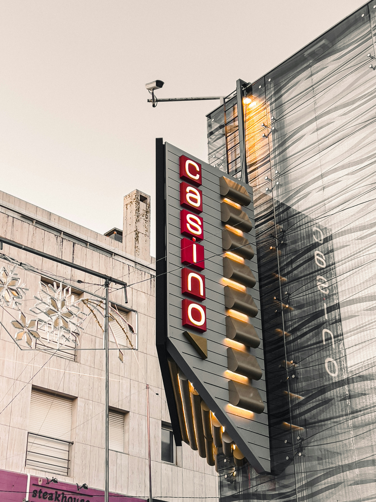
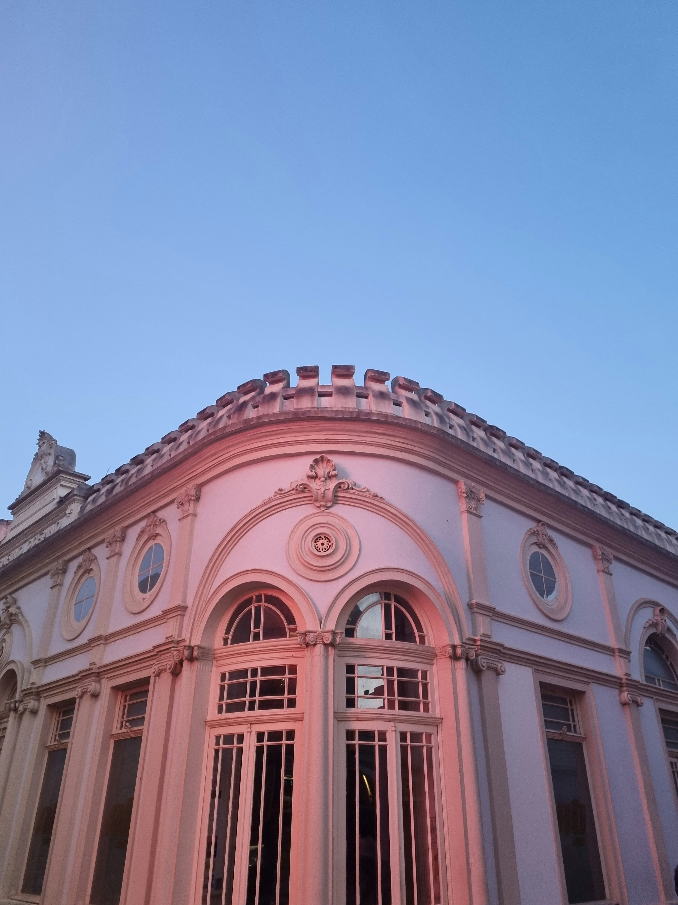
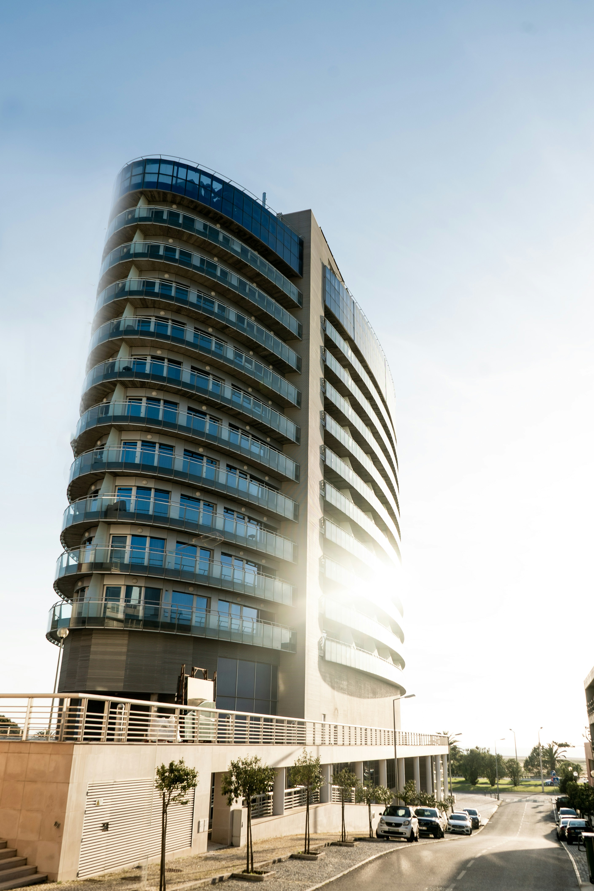
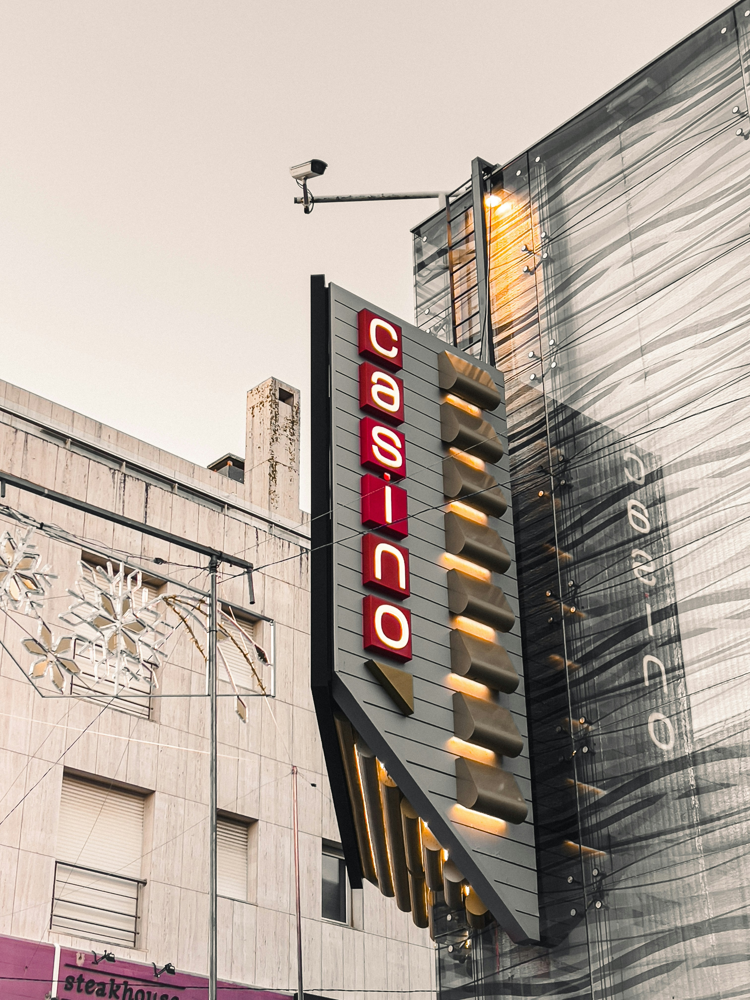
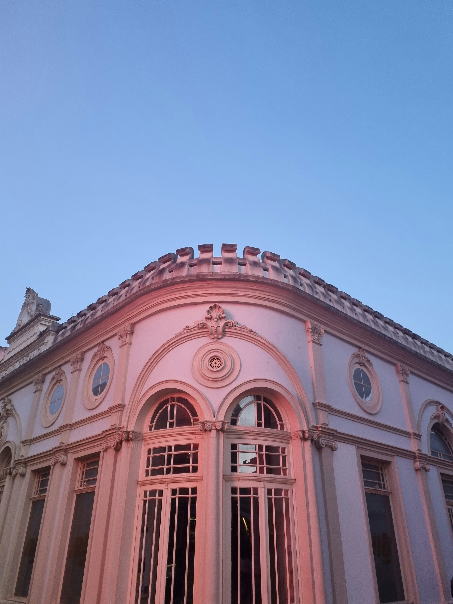
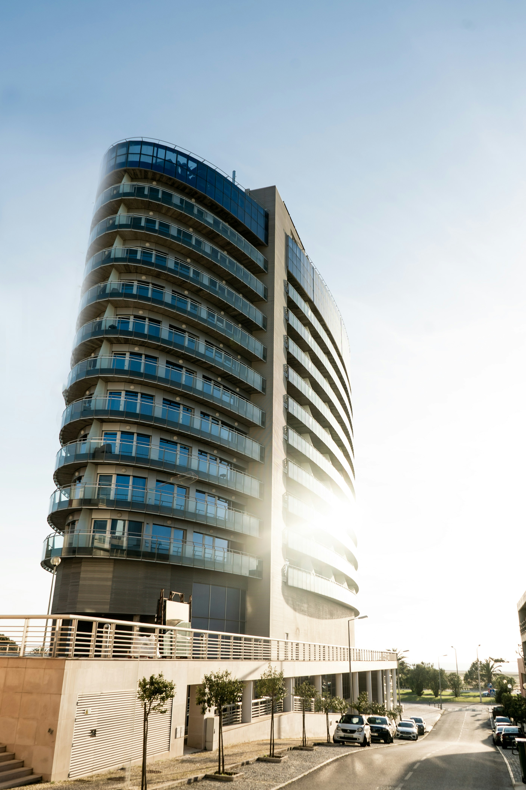

Why Figueira da Foz?
Sun and sea with abundance!
Figueira da Foz, the city at the mouth of the Mondego River,
located at 40 kilometers from Coimbra, with extensive beaches of
soft white sand which invite for a relaxing holiday.
The city of Figueira da Foz will strike you with the unrivalled
beauty of its fascinating beaches but admiring Figueira da Foz
historical heritage is also a reason to discover the city. You can
start by visiting Dr. Santos Rocha Municipal Museum where you will
be able to admire great archaeology, African and Oriental
ethnography, numismatic, painting, sculpture, ceramic and
furniture collections. You can then visit Casa do Paço which will
inspire you with its tile collection. You can then take a tour
through the local churches, admire the Saint Antony Convent
paintings or the 15th century stone retable at Saint Julian
Church, the oldest in the city.
Restaurants
My favorite restaurants in Figueira da Foz

Jimmy's Taco Bar
Tiny taco bar serving Mexican style tacos.
Adress:
R. Cândido dos Reis 11, 3080-157 Figueira da Foz
What I like about it
Very friendly staff and super cozy place with the best tacos ever!
Learn more
Puro
Combines the best of gastronomy and padel courts in the city center.
Adress:
Av. 25 de Abril 1, 3080-086 Figueira da Foz
What I like about it
The wild shrimp sautéed with spicy mayonnaise!
Learn moreOlaias
Awarded the 2024 Bib Gourmand by the Michelin Guide Portugal.
Adress:
Rua Abade Pedro nº2, 3080-081 Figueira da Foz
What I like about it
All the lovely rices and the fabulous desserts!
Learn moreGallery
My photos from Figueira da Foz
 




